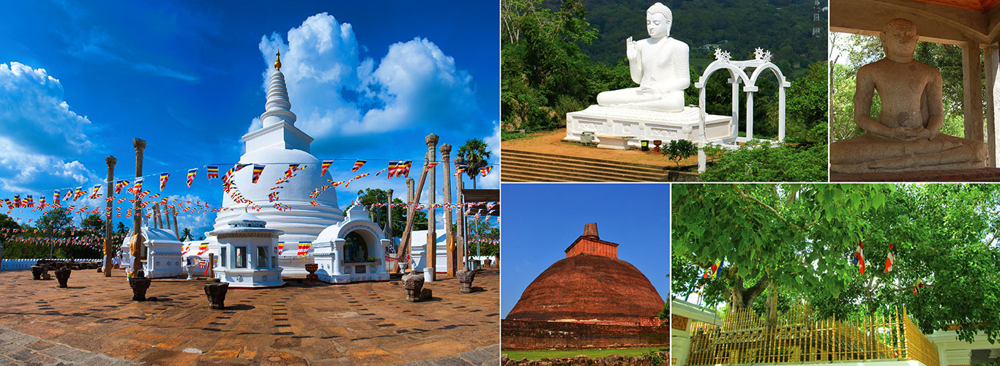

Destinations of srilanka
Welcome to the Land of Serenity
ANCIENT
Anuradhapura
Anuradhapura (Sinhala: අනුරාධපුරය, romanized: Anurādhapuraya; Tamil: அனுராதபுரம், romanized: Aṉurātapuram) is a major city in Sri Lanka. It is the capital city of North Central Province, Sri Lanka and the capital of Anuradhapura District. Anuradhapura is one of the ancient capitals of Sri Lanka, famous for its well-preserved ruins of an ancient Sinhala civilization. It was the third capital of the kingdom of Rajarata, following the kingdoms of Tambapanni and Upatissa Nuwara. The city, now a World Heritage site, was the centre of Theravada Buddhism for many centuries. The city lies 205 km (127 mi) north of the current capital of Colombo in the North Central Province, on the banks of the historic Malvathu River. It is one of the oldest continuously inhabited cities in the world and one of the eight World Heritage Sites of Sri Lanka. It is believed that from the fourth century BCE until the beginning of the 11th century CE it was the capital of the Sinhalese. During this period it remained one of the most stable and durable centres of political power and urban life in South Asia. The ancient city, considered sacred to the Buddhist world, is today surrounded by monasteries covering an area of over 16 square miles (41 km2)..
Kandy

Kandy (Sinhala: මහනුවර Mahanuwara, pronounced [mahanuʋərə]; Tamil: கண்டி Kandy, pronounced [ˈkaɳɖi]) is a major city in Sri Lanka located in the Central Province. It was the last capital of the ancient kings' era of Sri Lanka. The city lies in the midst of hills in the Kandy plateau, which crosses an area of tropical plantations, mainly tea. Kandy is both an administrative and religious city and is also the capital of the Central Province. Kandy is the home of The Temple of the Tooth Relic (Sri Dalada Maligawa), one of the most sacred places of worship in the Buddhist world. It was declared a world heritage site by UNESCO in 1988.
Sri Dalada Maligawa or the Temple of the Sacred Tooth Relic is a Buddhist temple in the city of Kandy, Sri Lanka. It is located in the royal palace complex of the former Kingdom of Kandy, which houses the relic of the tooth of the Buddha. Since ancient times, the relic has played an important role in local politics because it is believed that whoever holds the relic holds the governance of the country. Kandy was the last capital of the Sri Lankan kings and is a World Heritage Site mainly due to the temple. Bhikkhus of the two chapters of Malwatte and Asgiriya conduct daily worship in the inner chamber of the temple. Rituals are performed three times daily: at dawn, at noon and in the evenings. On Wednesdays, there is a symbolic bathing of the relic with an herbal preparation made from scented water and fragrant flowers called Nanumura Mangallaya. This holy water is believed to contain healing powers and is distributed among those present. The temple sustained damage from bombings by Janatha Vimukthi Peramuna in 1989 and by Liberation Tigers of Tamil Eelam in 1998 but was fully restored each time.
Adams Peak

Adam's Peak is a 2,243 m (7,359 ft) tall conical mountain located in central Sri Lanka. It is well known for the Sri Pada, i.e., "sacred footprint", a 1.8 m (5 ft 11 in) rock formation near the summit, which in Buddhist tradition is held to be the footprint of the Buddha, in Hindu tradition that of Hanuman or Shiva and in some Islamic and Christian tradition that of Adam, or that of St. Thomas...
The mountain is located in the southern reaches of the Central Highlands in the Ratnapura District and Nuwara Eliya district of the Sabaragamuwa Province and Central Province —lying about 40 km northeast of the city of Ratnapura and 32 km southwest of the city of Hatton. The surrounding region is largely forested hills, with no mountain of comparable size nearby. The region along the mountain is a wildlife reserve, housing many species varying from elephants to leopards, and including many endemic species. Adam's Peak is important as a watershed. The districts to the south and the east of Adam's Peak yield precious stones—emeralds, rubies and sapphires, for which the island has been famous, and which earned for its ancient name of Ratnadvipa